Wildfarmed : A Story About Bread
Director / 3D Animation & Post Production
‘A Story About Bread’, is a climate film like no other. Produced by flour-brand Wildfarmed and directed by the creative minds James Payne, and Beej&Them. This visual delight will have you questioning everything you thought you knew about the cupboard staple. The 8-minute trippy film, packed full of visual pallet cleansers and metaphors takes viewers on a rollercoaster beginning with a larger-than-life loaf hurtling towards our planet from space - on impact we see the crusty bread enter into a 90s acid house scene as the narrator, Tim Blinkhurst, starts to relay the tale.
It begins with retellings of the Great Fire of London, the French Revolution and the origins of the ‘superfood’. As the intense video progresses, viewers are made aware that many of the loaves they buy daily are full of bleach and emulsifiers, and the farming practices are destroying the planet. Is our appetite for bread killing the earth we live on - when it could, with a few changes, be healing it?
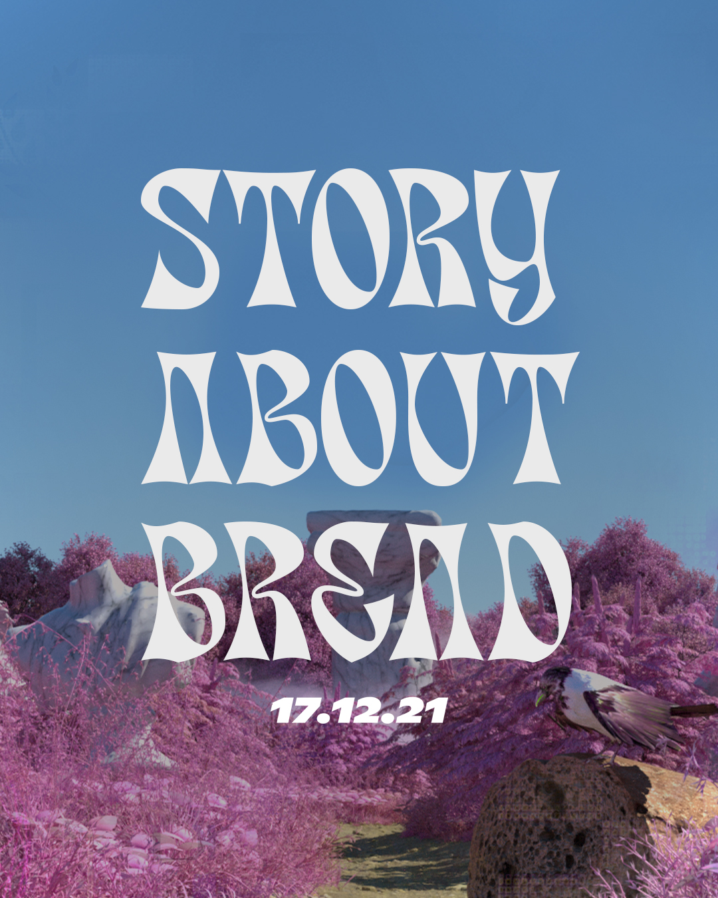
The main film
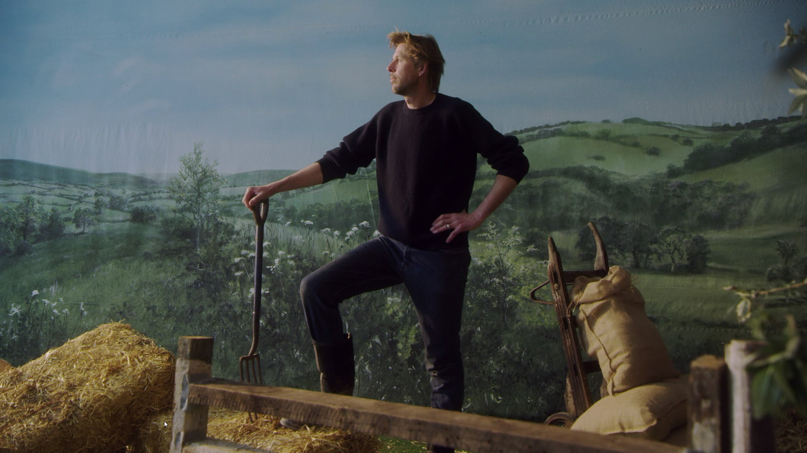
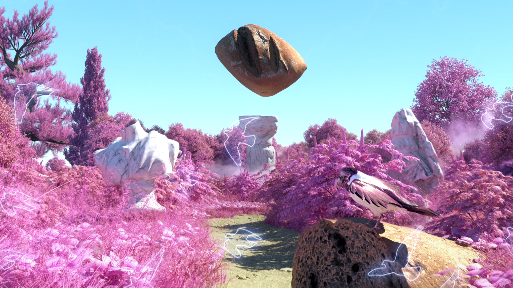
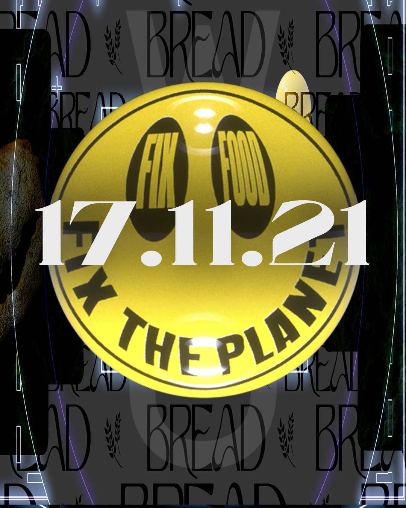
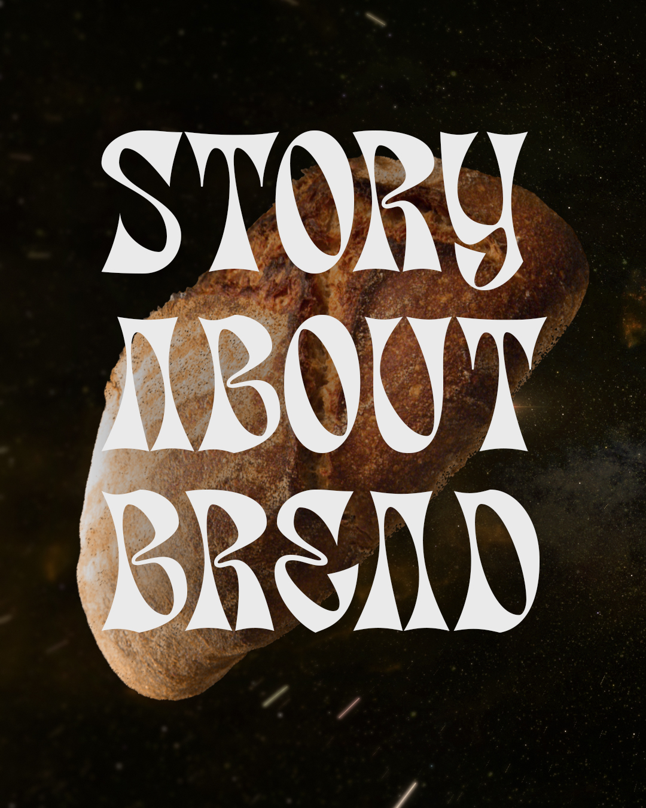
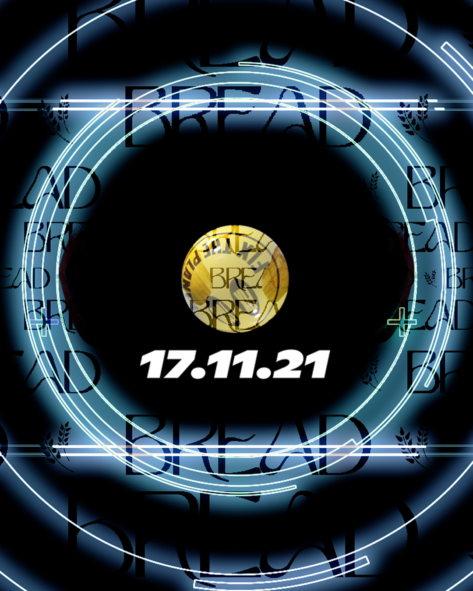
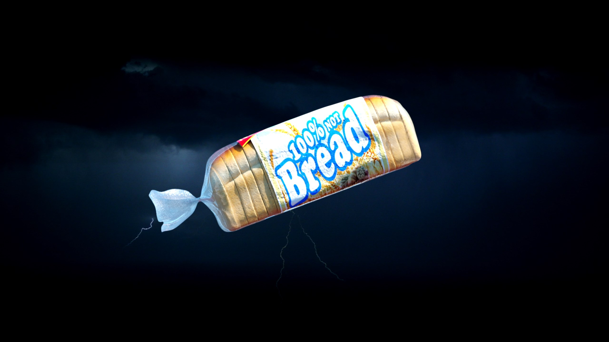
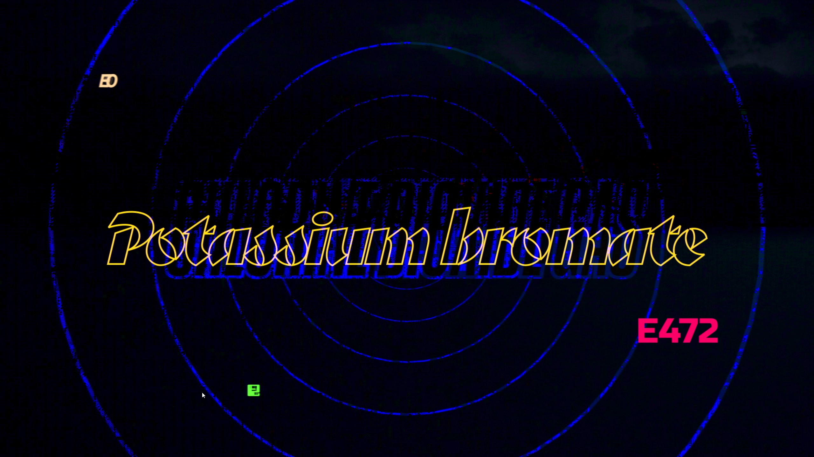
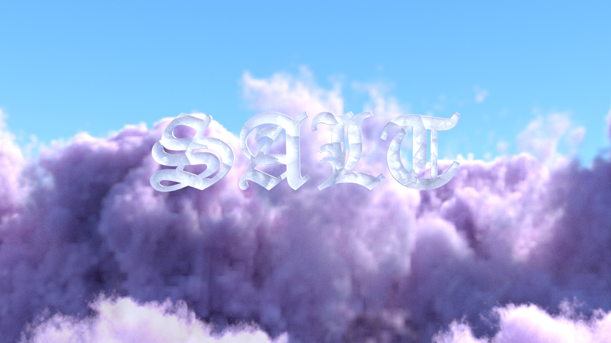
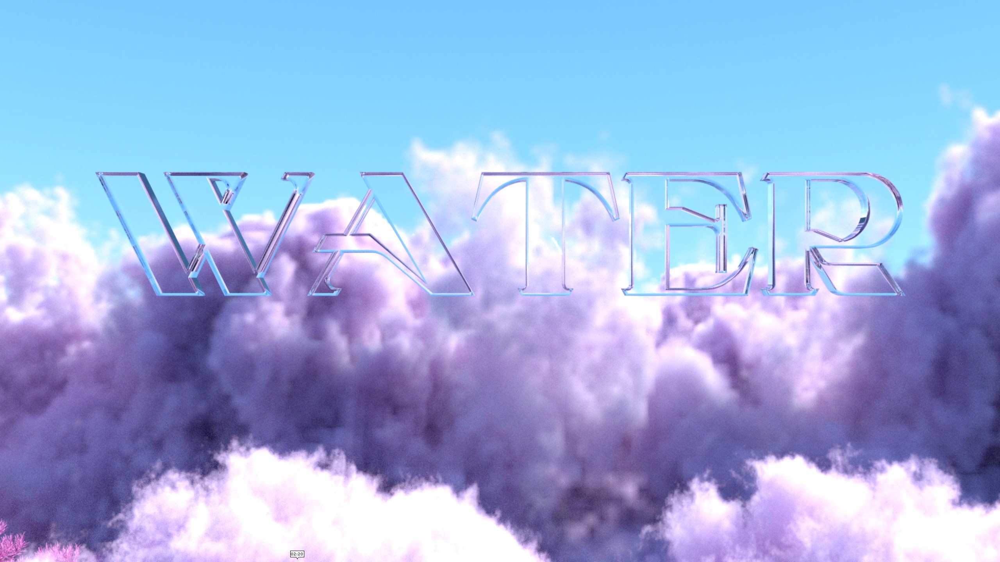
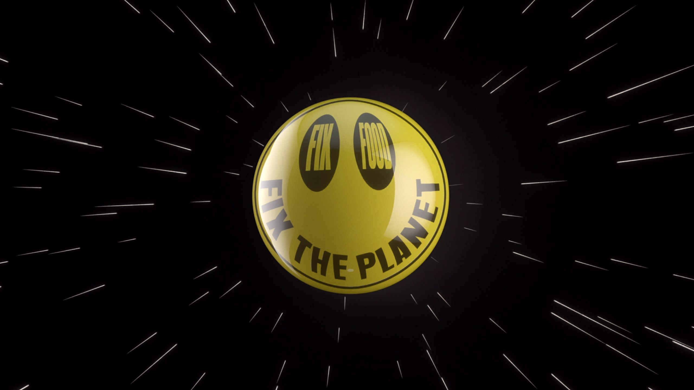
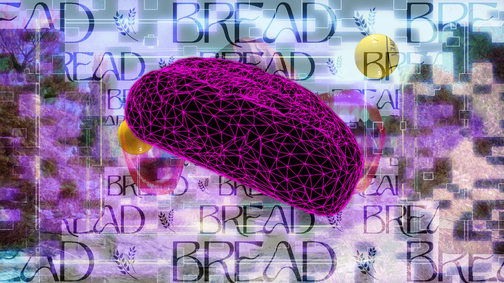